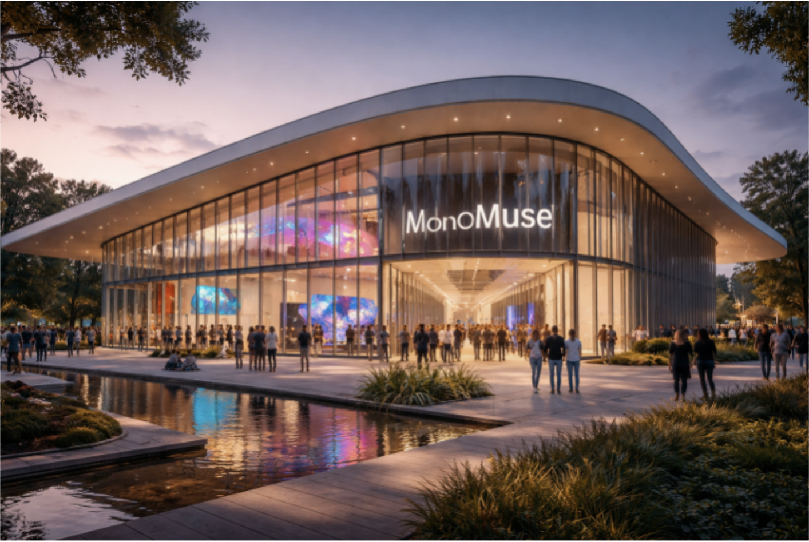

Explore

Discover MonoMuse
Founded in 2000, MonoMuse has been a beacon of innovation and creativity for just over a quarter of a century. Since then, countless visitors have been inspired by our numerous exhibitions and interactive installations.
Mission Statement
Our mission is to inspire curiosity and creativity through the intersection of art, technology, and human experience.
Milestones
- 2000: MonoMuse opens its doors to the public.
- 2005: Launch of the first interactive digital art installation.
- 2010: Introduction of virtual reality experiences.
- 2015: Expansion to include a dedicated space for emerging artists.
- 2020: Launch of the MonoMuse mobile app for enhanced visitor engagement.